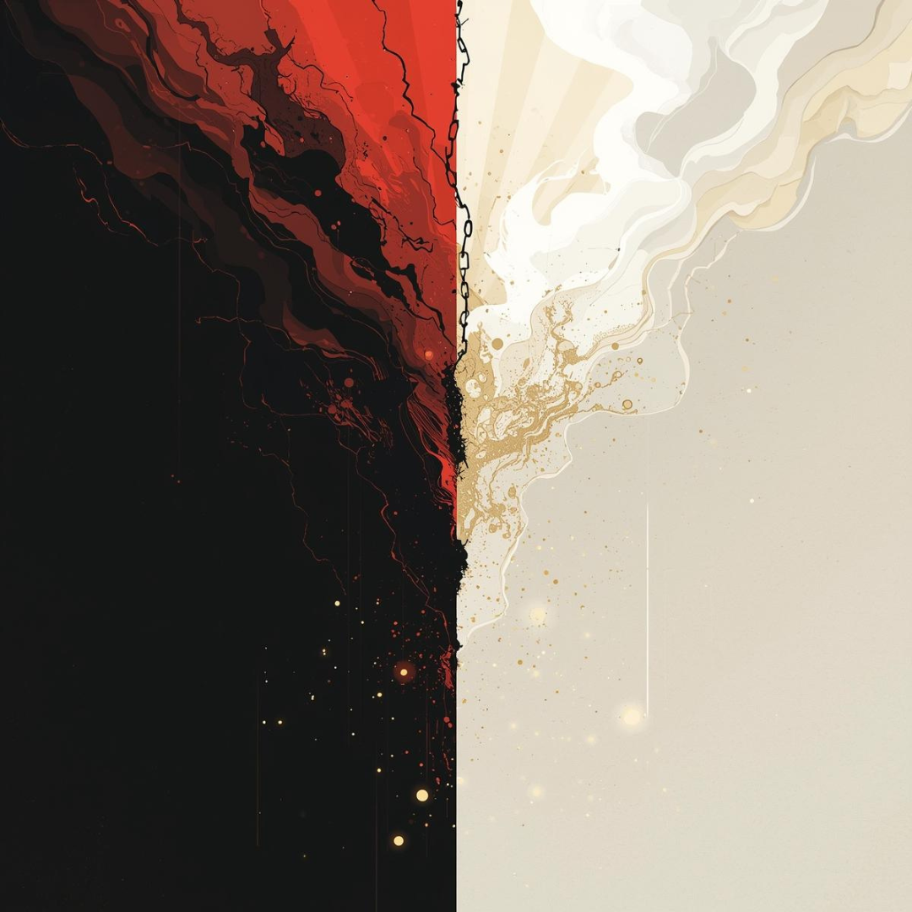
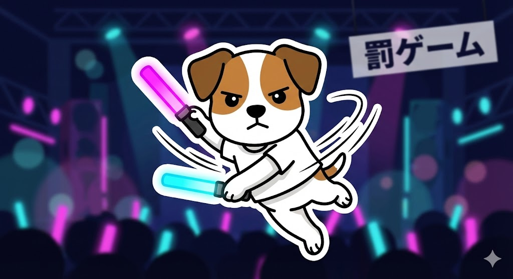

<!DOCTYPE html>
<html lang="ja">
<head>
<meta charset="UTF-8" />
<title>究極の2択 性格ゲーム（地獄×天国 + エニア18問）</title>
<meta name="viewport" content="width=device-width, initial-scale=1" />
<style>
  body{
    margin:0;
    background:#111;
    color:#f7f7f7;
    font-family:system-ui,-apple-system,BlinkMacSystemFont,"Segoe UI",sans-serif;
    display:flex;
    justify-content:center;
    align-items:center;
    min-height:100vh;
  }
  .card{
    background:#181818;
    border:1px solid #444;
    border-radius:16px;
    padding:22px 20px;
    max-width:560px;
    width:100%;
    box-shadow:0 0 25px rgba(0,0,0,.6);
    box-sizing:border-box;
  }
  h1{ margin:.2em 0 .5em; font-size:1.55rem; letter-spacing:.02em; }
  .progress{ color:#aaa; font-size:.85rem; margin-bottom:.35em; }
  .question{ margin:1em 0; font-size:1.05rem; line-height:1.55; white-space:normal; }
  .subtitle{ color:#ccc; font-size:.95rem; line-height:1.55; margin:.2em 0 1em; }
  .choices{ display:flex; flex-direction:column; gap:10px; margin:16px 0; }
  .btn{
    border:none;
    border-radius:999px;
    padding:14px 18px;
    font-size:.98rem;
    cursor:pointer;
  }
  .choice{
    background:#252525;
    color:#fff;
    border:1px solid #444;
    text-align:left;
    line-height:1.4;
  }
  .choice.selectedA{ border-color:#f5b642; background:rgba(245,182,66,.18); }
  .choice.selectedB{ border-color:#e50914; background:rgba(229,9,20,.18); }

  .main{
    background:linear-gradient(135deg,#e50914,#f5b642);
    color:#111;
    font-weight:700;
    width:100%;
  }
  .sub{
    background:#2a2a2a;
    color:#fff;
    border:1px solid #444;
    flex:1;
  }
  .danger{
    background:#e50914;
    color:#fff;
    font-weight:700;
    width:100%;
  }
  .nav{ display:flex; gap:8px; margin-top:10px; }
  .nav .main, .nav .danger{ flex:1; }
  .btn[disabled]{ opacity:.4; cursor:default; }

  img.hero{
    width:100%;
    max-width:300px;
    display:block;
    margin:10px auto 14px;
    border-radius:10px;
  }
  .badge{
    display:inline-block;
    background:#333;
    padding:2px 10px;
    border-radius:999px;
    font-size:.78rem;
    margin-left:8px;
    vertical-align:middle;
  }
  .highlight{ color:#f5b642; font-weight:700; }
  .small{ font-size:.88rem; color:#ccc; line-height:1.55; }
  .topTag{
    display:inline-block;
    margin-left:8px;
    padding:2px 8px;
    border-radius:999px;
    font-size:.72rem;
    background:#222;
    border:1px solid #444;
    color:#f5b642;
    vertical-align:middle;
  }
  hr.sep{
    border:none;
    height:1px;
    background:#333;
    margin:16px 0;
  }
</style>
</head>

<body>
<div class="card" id="app"></div>

<script>
/* =========================================================
   設定：画像
========================================================= */
const rainyTypeLabel = "作者：Rainy（タイプ5）";

/** imgフォルダに入れた犬画像（あなたのファイル名に合わせ済み） */
const dogImages = {
  1: "img/dog_type01.png",
  2: "img/dog_type02.png",
  3: "img/dog_type03.png",
  4: "img/dog_type04.png",
  5: "img/dog_type05.png",
  6: "img/dog_type06.png",
  7: "img/dog_type07.png",
  8: "img/dog_type08.png",
  9: "img/dog_type09.png"
};
function getDogImg(typeNum){
  return dogImages[typeNum] || dogImages[5];
}

/* =========================================================
   ① 地獄16 + 天国16 = 32問（2択ゲーム）
   ※ ここは「q / A / B」表記で統一
========================================================= */
const questions32 = [
  // 地獄16
  {q:"嫌われない人生 vs なめられない人生",A:"嫌われない",B:"なめられない"},
  {q:"ずっと謝り続ける vs ずっと言い訳し続ける",A:"謝り続ける",B:"言い訳し続ける"},
  {q:"一生気まずい沈黙 vs 一生浅い雑談",A:"気まずい沈黙",B:"浅い雑談"},
  {q:"毎日上司に詰められる vs 毎日部下に裏切られる",A:"上司に詰められる",B:"部下に裏切られる"},
  {q:"一生頼れない vs 一生頼られすぎる",A:"頼れない",B:"頼られすぎる"},
  {q:"一生本音しか言えない vs 一生ウソしか言えない",A:"本音しか言えない",B:"ウソしか言えない"},
  {q:"一生予定が狂う vs 一生予定通りで退屈",A:"予定が狂う",B:"予定通りで退屈"},
  {q:"一生誤解され続ける vs 一生期待され続ける",A:"誤解され続ける",B:"期待され続ける"},
  {q:"一生選択を迫られる vs 一生選択肢がない",A:"選択を迫られる",B:"選択肢がない"},
  {q:"一生相談されない vs 一生相談され続ける",A:"相談されない",B:"相談され続ける"},
  {q:"一生評価されない努力 vs 一生評価される実力不足",A:"評価されない努力",B:"評価される実力不足"},
  {q:"一生予定を守らされる vs 一生予定を守られない",A:"守らされる",B:"守られない"},
  {q:"一生人に合わせ続ける vs 一生人に合わせてもらう",A:"合わせ続ける",B:"合わせてもらう"},
  {q:"一生安心できない成功 vs 一生安心だけの失敗",A:"安心できない成功",B:"安心だけの失敗"},
  {q:"一生注目され続ける vs 一生存在感ゼロ",A:"注目され続ける",B:"存在感ゼロ"},
  {q:"一生誰かに依存される vs 一生誰にも頼られない",A:"誰かに依存される",B:"誰にも頼られない"},

  // 天国16
  {q:"一生安心 vs 一生ワクワク",A:"安心",B:"ワクワク"},
  {q:"一生理解される vs 一生自由でいられる",A:"理解される",B:"自由でいられる"},
  {q:"一生お金に困らない vs 一生時間に追われない",A:"お金に困らない",B:"時間に追われない"},
  {q:"称賛される天才 vs 愛される凡人",A:"称賛される天才",B:"愛される凡人"},
  {q:"一生自信がある vs 一生不安がない",A:"自信がある",B:"不安がない"},
  {q:"一生心が穏やか vs 一生感動が多い",A:"心が穏やか",B:"感動が多い"},
  {q:"一生好きなことだけ vs 一生得意なことだけ",A:"好きなことだけ",B:"得意なことだけ"},
  {q:"一生ひとり時間たっぷり vs 一生仲間と一緒",A:"ひとり時間",B:"仲間と一緒"},
  {q:"一生今のままでOKと言われる vs 一生もっと期待される",A:"今のままでOK",B:"もっと期待される"},
  {q:"一生失敗しない vs 一生後悔しない",A:"失敗しない",B:"後悔しない"},
  {q:"一生誰かの一番 vs 一生みんなに好かれる",A:"誰かの一番",B:"みんなに好かれる"},
  {q:"一生自分を信じられる vs 一生人を信じられる",A:"自分を信じられる",B:"人を信じられる"},
  {q:"一生必要とされる vs 一生尊敬される",A:"必要とされる",B:"尊敬される"},
  {q:"一生穏やかな日常 vs 一生忘れられない瞬間",A:"穏やかな日常",B:"忘れられない瞬間"},
  {q:"一生選ばれる側 vs 一生選ぶ側",A:"選ばれる側",B:"選ぶ側"},
  {q:"一生自分を好きでいられる vs 一生愛され続ける",A:"自分を好きでいられる",B:"愛され続ける"}
];

/** Rainy（タイプ5）が選びそうな答え（32個） */
const rainyAnswers32 = [
  "B","A","A","A","A","A","B","A","A","A","A","A","A","A","B","B",
  "A","B","B","A","B","A","A","A","A","B","B","B","B","A","B","A"
];

/* =========================================================
   ② エニア判定（18問）— 超シンプル採点
   ・各問：A/Bどっちかで「寄りやすいタイプ」に1点
   ・Wing/健全度は入れない（スッキリ）
========================================================= */
const ennea18 = [
  // 1
  {q:"ミスを見つけたとき、まず出る反応は？",
   A:"正しく直したくなる（基準・正しさ）", B:"波風を立てずに流したくなる（平和）",
   Atypes:[1], Btypes:[9]},
  // 2
  {q:"誰かが落ち込んでる。あなたの最初の動きは？",
   A:"手伝えることを探して動く", B:"距離を保ちつつ状況を分析する",
   Atypes:[2], Btypes:[5]},
  // 3
  {q:"結果が必要な場面。あなたが選ぶのは？",
   A:"成果を出して評価を取りにいく", B:"自分らしさ・世界観を守る",
   Atypes:[3], Btypes:[4]},
  // 4
  {q:"集団の中でのあなたは？",
   A:"空気を整えて“普通に”合わせる", B:"あえて独自路線でいく",
   Atypes:[9,6], Btypes:[4,7]},
  // 5
  {q:"不安なときのクセは？",
   A:"最悪パターンを想定して備える", B:"とにかく動いて切り抜ける",
   Atypes:[6], Btypes:[8]},
  // 6
  {q:"揉め事が起きたとき",
   A:"白黒つけて前に進める", B:"みんなの妥協点を探す",
   Atypes:[8], Btypes:[9]},
  // 7
  {q:"休日の理想は？",
   A:"予定を詰めて楽しいこと全部やる", B:"整えて、質を上げて満足する",
   Atypes:[7], Btypes:[1,5]},
  // 8
  {q:"人に頼まれたとき",
   A:"つい引き受けがち（期待に応えたい）", B:"条件を確認してから決める（境界線）",
   Atypes:[2,9], Btypes:[8,5]},
  // 9
  {q:"評価されると嬉しいのは？",
   A:"すごいね！結果出したね！", B:"わかってるね…深いね…",
   Atypes:[3], Btypes:[5,4]},
  // 10
  {q:"初対面が多い場",
   A:"まず周りを観察して安全確認", B:"とりあえず話しかけて場を作る",
   Atypes:[6,5], Btypes:[7,3]},
  // 11
  {q:"ルールが曖昧なとき",
   A:"こうあるべき基準を作る", B:"状況に合わせて柔軟にいく",
   Atypes:[1], Btypes:[9,7]},
  // 12
  {q:"気づいたらやってること",
   A:"人の役に立つ行動（世話/フォロー）", B:"効率化・省力化・仕組み化",
   Atypes:[2], Btypes:[5,3]},
  // 13
  {q:"怒りが出る瞬間",
   A:"筋が通ってない/ズルい", B:"支配される/舐められる",
   Atypes:[1], Btypes:[8]},
  // 14
  {q:"落ち込んだとき",
   A:"自分の世界に潜って感情を味わう", B:"とにかく前向きイベントで上書き",
   Atypes:[4], Btypes:[7]},
  // 15
  {q:"責任が重いとき",
   A:"ちゃんとやる（完璧寄り）", B:"守りを固める（確認/保険）",
   Atypes:[1,3], Btypes:[6]},
  // 16
  {q:"人間関係でよく言われがち",
   A:"優しい/合わせてくれる", B:"クール/ドライ/一線引く",
   Atypes:[9,2], Btypes:[5,8]},
  // 17
  {q:"“自分らしさ”で譲れないのは？",
   A:"センス・個性・意味", B:"結果・実利・効率",
   Atypes:[4], Btypes:[3,5]},
  // 18
  {q:"疲れているときの回復法",
   A:"一人になって充電", B:"誰かと話して回復",
   Atypes:[5,4], Btypes:[2,7,9]}
];

/** タイプ名（表記はRainyの好みで“タイプ〇：○○タイプ”） */
const typeLabel = {
  1:"タイプ1：改革タイプ",
  2:"タイプ2：援助タイプ",
  3:"タイプ3：達成タイプ",
  4:"タイプ4：個性タイプ",
  5:"タイプ5：分析タイプ",
  6:"タイプ6：安全タイプ",
  7:"タイプ7：熱中タイプ",
  8:"タイプ8：挑戦タイプ",
  9:"タイプ9：平和タイプ"
};

/** タイプ一言（毒舌は司会用に別で作るとして、ここは“表向きエンタメ”） */
const typeOneLiner = {
  1:"『正しさ』に命をかける。脳内に監査部が常駐してる。",
  2:"人の役に立つと元気。気づいたら世話焼きが発動してる。",
  3:"勝ち筋を見つけて最短で取りにいく。成果が酸素。",
  4:"“私だけの世界”がある。センスと情緒が武器。",
  5:"情報を食べて生きる。静かに全部見てるタイプ。",
  6:"危機管理がプロ級。確認してから進む安心設計。",
  7:"楽しさ最優先。ワクワクを見つける嗅覚が強い。",
  8:"強くて頼れる。守るために前に出るボス気質。",
  9:"場を和ませる天才。争いを丸く収める達人。"
};

/* =========================================================
   状態：画面（モード）
========================================================= */
const app = document.getElementById("app");
let mode = "start"; // start / twoChoice / ennea / penalty
let index32 = -1;
let ans32 = [];

let index18 = 0;
let ans18 = []; // "A"/"B" の配列（18）

/* =========================================================
   画面：スタート
========================================================= */
function renderStart(){
  mode = "start";
  app.innerHTML = `
    <h1>究極の2択 性格ゲーム</h1>
    
    <p class="subtitle">
      AかBを直感で選んでください。<br>
      最後に<strong>Rainyポイント</strong>と<br>
      「タイプ5との距離感（相性っぽいもの）」が出ます。<br><br>
      その後、<strong>エニア判定（18問）</strong>もできます。
    </p>
    <button class="btn main" onclick="startTwoChoice()">スタート</button>
  `;
}

/* =========================================================
   2択(32)：開始
========================================================= */
function startTwoChoice(){
  mode = "twoChoice";
  ans32 = [];
  index32 = -1;
  next32();
}

/* =========================================================
   2択(32)：次へ
   ※ 16問目の後に「地獄→天国」演出を1画面挟む（index32===16）
========================================================= */
function next32(){
  index32++;

  // 地獄→天国の演出（16を踏んだタイミングで表示）
  if(index32 === 16){
    app.innerHTML = `
      <div class="progress">演出</div>
      <h1>2択 性格ゲーム</h1>
      
      <p class="subtitle">
        地獄を抜けました。<br>
        <strong>ここから天国の2択です。</strong>
      </p>
      <button class="btn main" onclick="next32()">続ける</button>
      <div class="nav">
        <button class="btn sub" onclick="prev32()">← もどる</button>
        <button class="btn sub" onclick="renderStart()">最初に戻る</button>
      </div>
    `;
    return;
  }

  if(index32 >= questions32.length){
    renderResult32();
    return;
  }
  renderQuestion32();
}

function prev32(){
  if(index32 <= 0){
    renderStart();
    return;
  }
  index32--;
  // ちょうど演出の直後に戻ったら、演出画面に戻す
  if(index32 === 16){
    index32 = 15; // 直前の設問へ戻す
  }
  renderQuestion32();
}

function choose32(v){
  ans32[index32] = v;
  renderQuestion32();
}

function renderQuestion32(){
  const q = questions32[index32];
  const a = ans32[index32];

  app.innerHTML = `
    <div class="progress">Q${index32 + 1} / ${questions32.length}</div>
    <h1>究極の2択 性格ゲーム</h1>

    <div class="question">${escapeHtml(q.q)}</div>

    <div class="choices">
      <button class="btn choice ${a === "A" ? "selectedA" : ""}" onclick="choose32('A')">
        ${escapeHtml(q.A)}
      </button>
      <button class="btn choice ${a === "B" ? "selectedB" : ""}" onclick="choose32('B')">
        ${escapeHtml(q.B)}
      </button>
    </div>

    <div class="nav">
      <button class="btn sub" onclick="prev32()" ${index32 === 0 ? "disabled" : ""}>← 戻る</button>
      <button class="btn danger" onclick="next32()" ${!a ? "disabled" : ""}>
        ${index32 === questions32.length - 1 ? "結果を見る →" : "次へ →"}
      </button>
    </div>
  `;
}

function renderResult32(){
  const countA = ans32.filter(x=>x==="A").length;
  const countB = ans32.filter(x=>x==="B").length;

  let rainy = 0;
  ans32.forEach((a,i)=>{ if(a === rainyAnswers32[i]) rainy++; });

  let comment =
    rainy === questions32.length ? "今日はほぼType5クローンです（笑）" :
    rainy > 24 ? "Type5と感覚がかなり近い日かも。冷静・合理モード強め。" :
    rainy > 16 ? "Type5寄り。考えてから動くタイプ。" :
    rainy > 8  ? "バランス型。感情と理性が半々。" :
                 "Type5とは真逆！感覚派・行動派。";

  app.innerHTML = `
    <h1>結果</h1>
    

    <p class="subtitle">
      あなたの回答：<br>
      A：${countA}問 ／ B：${countB}問
    </p>

    <p class="subtitle">
      <span class="highlight">Rainyポイント：</span>
      ${rainy} / ${questions32.length}
      <span class="badge">${rainyTypeLabel}</span>
    </p>

    <p class="subtitle">${escapeHtml(comment)}</p>

    <p class="small">
      ※ Rainyポイント：作者がタイプ5なので、<br>
      「タイプ5が選びそうな方」と同じだと1点。高いほど“今日の思考のクセ”がタイプ5寄り。<br>
      正解・不正解はありません。
    </p>

    <div class="nav">
      <button class="btn main" onclick="startEnnea18()">エニア判定（18問）へ →</button>
      <button class="btn sub" onclick="startTwoChoice()">もう一度（2択32問）</button>
    </div>

    <div class="nav">
      <button class="btn sub" onclick="renderStart()">最初に戻る</button>
    </div>
  `;
}

/* =========================================================
   エニア18：開始
========================================================= */
function startEnnea18(){
  mode = "ennea";
  index18 = 0;
  ans18 = new Array(ennea18.length).fill(null);
  renderQuestion18();
}

function choose18(v){
  ans18[index18] = v;
  renderQuestion18();
}

function next18(){
  if(index18 < ennea18.length - 1){
    index18++;
    renderQuestion18();
  }else{
    renderResult18();
  }
}

function prev18(){
  if(index18 <= 0){
    // 18問の最初で戻ったら、2択結果へ戻す（司会的に気持ちいい）
    renderResult32();
    return;
  }
  index18--;
  renderQuestion18();
}

function renderQuestion18(){
  const item = ennea18[index18];
  const a = ans18[index18];

  app.innerHTML = `
    <div class="progress">エニア Q${index18 + 1} / ${ennea18.length}</div>
    <h1>エニア判定（18問）</h1>

    <div class="question">${escapeHtml(item.q)}</div>

    <div class="choices">
      <button class="btn choice ${a === "A" ? "selectedA" : ""}" onclick="choose18('A')">
        ${escapeHtml(item.A)}
      </button>
      <button class="btn choice ${a === "B" ? "selectedB" : ""}" onclick="choose18('B')">
        ${escapeHtml(item.B)}
      </button>
    </div>

    <div class="nav">
      <button class="btn sub" onclick="prev18()">← 戻る</button>
      <button class="btn danger" onclick="next18()" ${!a ? "disabled" : ""}>
        ${index18 === ennea18.length - 1 ? "エニア結果を見る →" : "次へ →"}
      </button>
    </div>
  `;
}

function renderResult18(){
  // スコア初期化
  const score = {1:0,2:0,3:0,4:0,5:0,6:0,7:0,8:0,9:0};

  // 採点
  ans18.forEach((pick, i)=>{
    const item = ennea18[i];
    const addTypes = (pick === "A") ? item.Atypes : item.Btypes;
    (addTypes || []).forEach(t => { score[t]++; });
  });

  // ランキング
  const ranked = Object.keys(score)
    .map(k => ({type: Number(k), pts: score[k]}))
    .sort((a,b)=> b.pts - a.pts);

  const topType = ranked[0].type;
  const top3 = ranked.slice(0,3);

  const top3Html = top3.map((r, idx)=>{
    const tag = idx===0 ? `<span class="topTag">TOP</span>` : "";
    return `<div class="subtitle">${escapeHtml(typeLabel[r.type])}：<span class="highlight">${r.pts}点</span>${tag}</div>`;
  }).join("");

  app.innerHTML = `
    <h1>エニア結果</h1>
    <div class="subtitle">
      あなたは <span class="highlight">${escapeHtml(typeLabel[topType])}</span> の傾向が強め！
      <span class="topTag">TOP</span>
    </div>

    

    <div class="subtitle">${escapeHtml(typeOneLiner[topType])}</div>

    <hr class="sep">

    <div class="subtitle"><strong>上位3タイプ</strong></div>
    ${top3Html}

    <p class="small">
      ※これは“ミニ判定（18問）”なので固定ラベルというより「今日のクセ寄り」<br>
      でも上位3つは“いつもの自分”とも関係が深いかも。
    </p>

    <div class="nav">
      <button class="btn main" onclick="startEnnea18()">もう一度（エニア18問）</button>
      <button class="btn sub" onclick="startTwoChoice()">2択ゲームからやる</button>
    </div>

    <div class="nav">
      <button class="btn danger" onclick="renderPenalty()">罰ゲームへ →</button>
      <button class="btn sub" onclick="renderStart()">最初に戻る</button>
    </div>
  `;
}

/* =========================================================
   罰ゲーム
========================================================= */
function renderPenalty(){
  mode = "penalty";
  app.innerHTML = `
    <h1>罰ゲーム</h1>
    
    <p class="subtitle">
      今回の…<br><strong>罰ゲームを発表します！</strong>
    </p>
    <div class="nav">
      <button class="btn main" onclick="renderStart()">最初に戻る</button>
    </div>
  `;
}

  /* =========================================================
   ユーティリティ
========================================================= */
function escapeHtml(str){
  return String(str ?? "")
    .replaceAll("&","&amp;")
    .replaceAll("<","&lt;")
    .replaceAll(">","&gt;")
    .replaceAll('"',"&quot;")
    .replaceAll("'","&#039;");
}

/* =========================================================
   初期表示
========================================================= */
renderStart();
</script>
</body>
</html>
